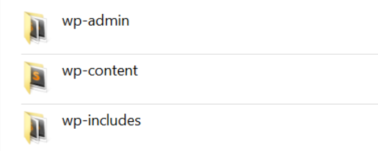
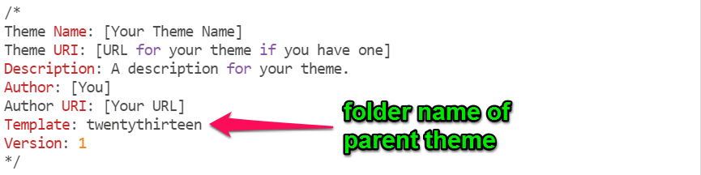
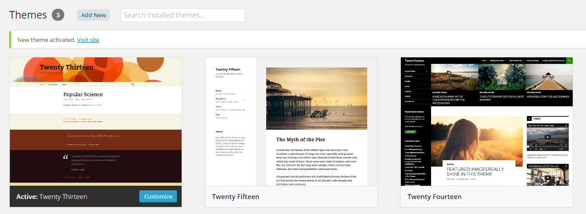
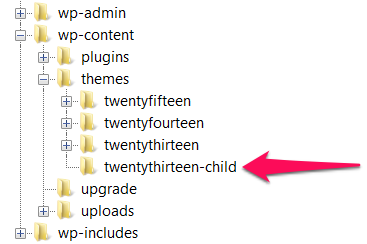

Building Themes for WordPress
With Tracy Levesque
@LilJimmi • tracy@yikesinc.com • TheTracyL.com
Slides located at: gdi.TheTracyL.com/building-themes
About you
Why do you want to build themes for WordPress?
- Your name and background
- Why you're here
- If you could visit any place in the world, where would you go?
About the TAs
Why do you want to help people build themes for WordPress?
- Your name and background
- Why you're here
- If you could visit any place in the world, where would you go?
About me
How I got into WordPress
- Co-founded web design and development company, YIKES, Inc.
- Made a WordPress blog for my kid in 2006
- Co-leader of make.wordpress.org/training
- Core contributor to 4.0 and 4.1
The rules
Day 1
Today you will learn...
- What WordPress themes are, how to install them and how they're structured
- How to modify a theme with a child theme
- How to make theme templates
- Common WordPress template tags
- How to use the WordPress Template Hierarchy
- How to use Starter Themes
And
- Take a 15 minute break at 3pm
Ready?
Here we go...
What are Themes?
Description from the Codex
WordPress Themes are files that work together to create the design and functionality of a WordPress site.
Themes are
Powerful
A theme not only determines how a site looks, it can also add functionality to a site. You can build plugin-like functionality right into a theme.
Themes are
Often Free
Right now there are over 3,020 free themes in the WordPress Themes Directory.
Managing Themes
Appearance > Themes
WordPress currently comes with 3 themes: Twenty Fifteen, Twenty Fourteen and Twenty Thirteen.
Under Appearance > Themes you can see all installed themes. The theme in use is labeled "Active."
Themes
Finding new themes
- Searching under the "Add New" tab
- Browsing the WordPress Themes Directory
- Searching other theme resources on the web
Themes
Installing themes
- Install right from the "Add New" tab
- Download a theme zip file and install it via the "upload" link
- Unzip the theme files and upload it via FTP to the
/wp-content/themesfolder
Let's take a closer look at a theme
The Files
WordPress file and folder structure

- wp-admin - WordPress core files, don't touch these!
- wp-content - Theme, plugin and uploaded files
- wp-includes - WordPress core files, don't touch these either!
The Files
Where theme files live

- wp-content
- plugins
- themes
- twentyfifteen
- twentyfourteen
- twentythirteen
The Files
The theme files
Modifying Themes
Now that I know where theme files live I can just edit them, right?
NO!
#1 Rule of WordPress Development
Never EVER edit WordPress core code.
This means do not edit:
- WordPress core files
- Plugin files
- Theme files
Why?
- Stuff gets broken
- Other plugins and themes may not work with your changes
- Updates wipe out your changes
So how do you customize a WordPress theme?
You create a theme that is a "child" of another theme
- Your child theme overrides the design elements you want changed and otherwise falls back to the parent.
- Your child theme can also override or add functionality to the parent theme.
How it Works
Your child theme's folder is a safe place where you can add css and php files without changing the parent theme.
If you break something you can just hit undo or remove your file. All parent theme files will remain intact.
Making a Child Theme
We'll make a child theme of Twenty Thirteen
What Your Child Theme Needs
In order for your child theme to work it needs 3 things
Really, it only needs 2 things, but 3 is better
What Your Child Theme Needs
Thing #1 - a style.css file
Define the general information for your theme.
/*
Theme Name: [Your Theme Name]
Theme URI: [URL for your theme if you have one]
Description: A description for your theme.
Author: [You]
Author URI: [Your URL]
Template: twentythirteen
Version: 1
*/
What Your Child Theme Needs
Thing #1 - a style.css file
Define the general information for your theme.
What Your Child Theme Needs
Thing #2 - a functions.php file
Enqueue the parent and child theme stylesheets
<?php
add_action( 'wp_enqueue_scripts', 'theme_enqueue_styles' );
function theme_enqueue_styles() {
wp_enqueue_style( 'parent-style', get_template_directory_uri() . '/style.css' );
wp_enqueue_style( 'child-style',
get_stylesheet_directory_uri() . '/style.css',
array('parent-style')
);
}
What Your Child Theme Needs
Thing #3 - a screenshot
This is the thumbnail image that represents each theme in Appearance > Themes in the WordPress admin.

What Your Child Theme Needs
Thing #3 - a screenshot
Create a 880px by 660px image file, name it “screenshot.png” and place it into the child theme’s folder.
Add your child theme
-

- Create a folder for your theme in
wp-content/themes(no spaces) - Add your 3 theme files (style.css, functions.php and screenshot.png) to your theme folder
Activate your theme
Go to Appearance > Themes in the WP admin.
Your child theme is now there!

Where We're At Now

The 3 files illustrate how a child theme's files affect the parent's files -- they either override and add functionality to its identically named file, or completely replaces it.
Exercise time!
Make a child theme
- Create a child theme of Twenty Thirteen
- Make sure you create a screenshot
- Activate your theme
Modifying the Parent Theme
Making CSS Changes
Your style.css file will override styles in the parent theme's style.css file with the same selectors.

Modifying the Parent Theme
Making CSS Changes
Example: Changing the size of the header title. The font-size for .site-title is 60px. Use the css selector in your child theme to change it.
.site-title {
font-size: 40px;
}
Modifying the Parent Theme
Making Template Changes
First, an introduction to templates...
Templates
From the Codex
Template files are the building blocks of your WordPress site. They fit together like the pieces of a puzzle to generate the web pages on your site.
Templates
- Assemble HTML, PHP and content from the database to display pages in a web browser
- Determines how a webpage or part of a webpage looks
Twenty Thirteen Template Files
In the twentythirteen folder is all the theme's the template files. You can create your own versions of these files in your child theme.
Some common template files
- header.php - The global header for your site
- footer.php - The global footer for your site
- index.php - The posts (blog) page
- page.php - Static pages
- sidebar.php - Your sidebar widget areas
- single.php - A single post
Modifying the Parent Theme
Making template changes
Example: Removing WordPress credit from footer.php
- Open
footer.phpin the twentythirteen folder and save a copy into your theme's folder. - Alter the contents of .site-info and save the file.
<div class="site-info">
<?php do_action( 'twentythirteen_credits' ); ?>
<a href="<?php echo esc_url( __( 'http://wordpress.org/', 'twentythirteen' ) ); ?>" title="<?php esc_attr_e( 'Semantic Personal Publishing Platform', 'twentythirteen' ); ?>"><?php printf( __( 'Proudly powered by %s', 'twentythirteen' ), 'WordPress' ); ?></a>
</div?><!-- .site-info -->
Modifying the Parent Theme
Making your own templates
Twentythirteen has just one default template, a content area with a right sidebar.

You can make additional templates. Templates you create will appear in the Template drop-down menu on the Page edit screen.
What a template file needs
First, a name (this goes at the top of your file)
<?php
/*
Template Name: [Type your template name here]
*/
?>
Second, at least these 2 include tags
<?php get_header(); ?>
<?php get_footer(); ?>
Modifying the Parent Theme
Making your own templates
Example: Create a full-width, no sidebar template.
- Open
page.phpin the twentythirteen folder. - Rename it
page-fullwidth.phpand save it into your theme's folder - Add the
Template Name:to top of the file - Remove
<?php get_sidebar(); ?> - Adjust the css to make
.entry-contentfull width.
Tip: body classes
WordPress dynamically adds classes to the body tag depending what page you are on or template you are using. Use them to create unique styles for pages.
Exercise time!
Practice modifying the parent theme
- Make CSS changes to the parent theme with your child theme
- Make your own version of templates that override the parent theme
- Add a new template to your theme
Template tags
Template tags let you insert dynamic content into your templates.
Include tags
Used in a template to execute the HTML and PHP found in another template
<?get_search_form(); ?>
<?get_sidebar(); ?>
<?comments_template(); ?>
Check out the WordPress Codex Include Tags Page
Include tags
Using Include tags
Example: Add the search form to the header
- Open
header.phpin the twentythirteen folder and save a copy into your theme's folder. - Add
<?get_search_form(); ?>to the header just below the site description
Function tags
Used to display useful WordPress PHP functions
<?the_title(); ?>
<?the_content(); ?>
<?the_permalink(); ?>
<?the_excerpt(); ?>
<?get_the_post_thumbnail(); ?>
Check out the WordPress Codex Function Reference
Function tags
Using Function tags
Example: Add a copyright to the footer
- Open
footer.phpin your theme's folder. - Add code to create a copyright line
Copyright © <?php echo date('Y'); ?> <a href="<?php echo home_url( '/' ); ?>"><?php bloginfo( 'name' ); ?></a>
Conditional tags
Used to grab and display content depending on what page it is and the conditions it matches.
is_front_page()
is_home()
is_single()
is_page()
is_category()
Check out the WordPress Codex Conditional Tags Page and this blog post on is_front_page() vs. is_home()
Function tags
Using Conditional tags
Example: Add credit to the footer that only shows on the home page
- Open
footer.php - Add code to create a credit line
<?php
if(is_front_page()){
echo "<p>Web design by [your name here]</p>";
}
?>
Function tags
Using Conditional tags
Example: Add a div to the header that only shows on the home page
header.php
<?php if (is_front_page() ) {?>
<div class='header-homediv'>
<h1>THIS IS THE HOME PAGE</h1>
</div>
<?php } ?>
Exercise time!
Practice using template tags
- Use an include tag. Suggestion: Add the search form to a template
- Use a function tag. Suggestion: Use the function
bloginfoto add the blog description to the footer. - Use a conditional tag. Suggestion: A show some text in the header only on the home page
Handy Template Tags
get_template_part
get_template_part is a special include tag that allows you to load any other template file into a template. It lets you to reuse code in multiple templates.
Important Dev rule #2 Don't Repeat Yourself.
Check out the WordPress Codex get template part
Handy Template Tags
get_template_part
<?php get_template_part( 'content', 'none' ); ?>
Will load a template file named content-none.php
Handy Template Tags
the_post_thumbnail
<?php the_post_thumbnail('medium'); ?>
This will create an img tag for the medium sized version of a post or page's "Featured Image"
Check out the WordPress Codex the post thumbnail
Handy Template Tags
the_post_thumbnail
You can bring up the thumbnail, medium, large, original or a custom size of the featured image. If no size is defined it will default to the thumbnail size.
<?php the_post_thumbnail('thumbnail'); ?>
<?php the_post_thumbnail('medium'); ?>
<?php the_post_thumbnail('large'); ?>
<?php the_post_thumbnail('full'); ?>
<?php the_post_thumbnail( array(250,100) ); ?>
Handy Template Tags
get_template_directory_uri and get_stylesheet_directory_uri
get_template_directory_uri- Retrieves stylesheet directory address for the current theme.get_stylesheet_directory_uri- Retrieves stylesheet directory address for the current theme/child theme.
Check out the WordPress Codex get template directory uri and get stylesheet directory uri
Handy Template Tags
get_template_directory_uri and get_stylesheet_directory_uri
To include images in your theme you can use the code below.
<img src="<?php echo get_stylesheet_directory_uri(); ?>/images/image.png" /><img src="http://whatever.com/wp-content/mytheme/images/image.png" />The WordPress Template Hierarchy
codex.wordpress.org says:
WordPress uses the Query String — information contained within each link on your web site — to decide which template or set of templates will be used to display the page.
The WordPress Template Hierarchy
What it is
If you name a template file a certain way, it will automatically apply to a certain page.
There's a chart on WordPress.org that shows how the naming conventions work.

The WordPress Template Hierarchy
The chart looks confusing, but if you break it down it's really pretty simple. We'll look at the template hierarchy for category archives.

The WordPress Template Hierarchy
How it works
If you name template a file a certain way they will affect the display of a certain page. Just follow the chart to find the correct naming convention.

The WordPress Template Hierarchy
How it works
Custom archive and post templates can be named by id or slug
- category-$slug
- category-$id
- category-kittens
- category-12
Check out this interactive version of the chart
The WordPress Template Hierarchy
Example: Make an archive term template
- Open
category.phpin the twentythirteen folder. - Rename it
category-[slug].phpand save it into your theme's folder - Modify the template
The WordPress Template Hierarchy
How it works
index.php is the end of the road. Any page that does not have another template file made for it will use index.php aka the default template for the posts (blog) page.
Exercise time!
Practice using the WordPress Template Hierarchy
- Make a special template for a tag or category you create
Starter Themes
Child themes are great for modifying existing themes, but you can create your own custom theme with a starter theme.
Starter themes have base WordPress functionality, but very little or no style. Starter theme developers encourage you to hack it and make it your own.
Starter Themes
Starter themes can also come with a base framework, like HTML 5 Boilerplate, Twitter Bootstrap or a responsive grid if you enjoy using frameworks. There's no need to reinvent the wheel!
Popular Starter Themes


Exercise time!
Install a Starter theme
- Download and install a starter theme
- Make it your own by editing style.css and screenshot.png
Resources
Essential WordPress Codex Articles
- The WordPress Codex - the online manual for WordPress and a living repository for WordPress information and documentation.
- Theme Development
- Stepping Into Templates